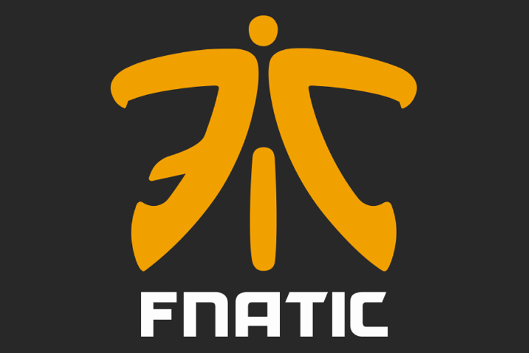
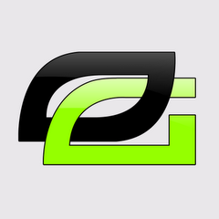
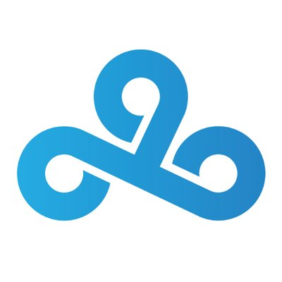
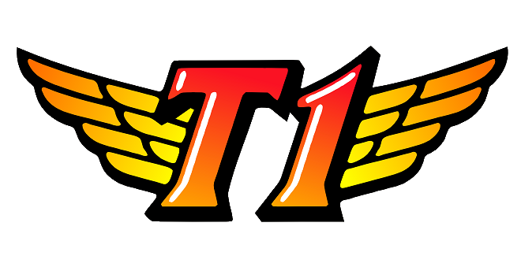
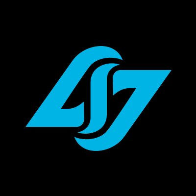
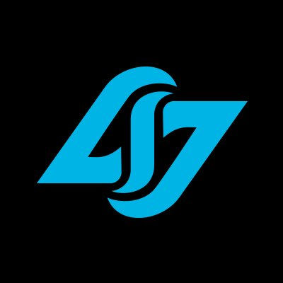

Requirements
If you're going to go into ESports, you need to have dedication. You need to know for sure that you want to have a career in professional gaming. Players can't just expect to be picked up for a team right off the bat. Budding players need to pick a game they want to sharpen their skills on to gain recognition. Recognition as a skilled player is the key to start being "professional" Players also need to be able to practice often. Practice keeps you from falling behind other teams.
Salary
The minimum pay a player can receive is $12,500 for a 28 match season. That would be around 6 to 9 months depending on the game for the tournament. But that is just the required minimum. Players can earn much more through placements (1st, 2nd, etc.) and sponsorship. There's more on sponsorship further down. The prizes for placing high (like 1st or 2nd) can range from in the thousands to in the millions.





 

Single Players
Not all players have to be in a team. There are those that prefer to go at it alone. Besides the available prize money, many of them do streaming. They video themselves competing and people can subscribe to watch. Good streamers can earn $3 per subscriber.
Sponsorship
Sponsorship is a major way players earn money in ESports. It's a good way for companies to get their products/services noticed by a large audience. Companies like Coca-Cola, Red Bull, Nissan and Geico have sponsored teams at some point. It's a good idea for teams to pair with a sponsor because if the sponsor accepts you, you can get funding for airplane tickets, food and equipment (which is definitely not cheap with a 5/6 man team).

Common sponsors for ESport teams.
Popularity
How/Why
ESports is starting to rise in recognition. Thanks to constant tech improvement, the addictive quality of videogames, and the option to be social with other people that share a similar interest. Gaming technology companies are constantly trying to create better versions of their products, either in visuals/animations or the systems themselves. Videogames as a whole are known for being called "addicting". There's something about them that makes players feel like they can keep going for a couple more hours (it should if it's a good game). People get a thrill out of trying to beat opponents or watching really skilled players battle it out. Videogames also give people the opportunity to meet other players. It's fun being able to discuss characters or moves or even playing against them. Getting the opportunity to challenge new opponents is pretty exciting.

People can't deny Esports is on the rise.
Where
Many tournaments are held in places like the United States, Australia, China, and South Korea. There are also international ones where teams have to get through certain stages in order to advance.
Streaming
Many players use streaming as a way to get themselves into the gaming community. They video themselves playing games, either just to show off certain moves, do a walkthrough tutorial or rage about what happened to them. It's not hard to get to the videos and anyone can watch them. Anyone can make an account and start streaming too.
Sport or Not Debate
Why is There a Debate?
People are just arguing about what can be considered a "sport". Does a sport have to be just physical activity? Or is all in the competitive aspect? People can get really heated on what ESports should be.
Yes Sport
Many people say that videogames involve similar characteristics to the physical sports. Videogame players need a significant amount of hand-eye coordination, focus, and a desire to win the competition. This is very true for most, if not all the games played in the tournaments. Others also say that as long as there's some kind of competing going on it should be considered a sport.
No Sport
People on this side consider videogames nothing more than things that destroy brain cells and spread laziness. All people do is sit and stare at a screen. Nothing that benefits the health of the person involved.
In Reality...
Games Normally Played
Real-Time Strategy
Sometimes abbreviated as RTS, these games involve maneuvering units to control areas on the map or destroy opponents' assets. Resources can be created for additional support. These kind of games aren't turn based so attacks or support building can happen at anytime. Mirco and Macromanagement are also common aspects in these games. To win, players must be flexible both mentally and physically (with hand movements) and be able to make quick decisions under a time limit. Warcraft 3 and Starcraft 2 are used for tournaments.
Fighting
These kind of games involve players controlling one character and doing close combat with another. Gameplay happens in rounds and characters each have their own set of skills/moves. Winning usually requires players to deplete a health bar using various techniques such as blocking, attack chaining, and specialties. Button mashing occurs quite often in these games. Tournaments use Street Fighter, Tekken and Super Smash Bros.
First Person Shooter
As the name suggests, players uses weapons (normally guns) in combat situations with the camera view being in first person perspective. These games are combat heavy and can sometimes be considered violent. To win, players might have to complete certain missons or eliminate other players. Many first person shooter games are used in tournaments. Popular ones would be the Call of Duty series, Overwatch and Halo.
Multiplayer Online Battle Arena
These games, MOBA for short, are a mix of strategy and action. Characters usually have different skill sets and players have to work together to defeat the base of the opposing teams. Cooperation is usually a must in these types of games since most MOBA games make it almost impossible to win as a single player. If you want to go solo, why are you playing a MOBA in the first place anyway? The characters usually fall under three categories: tanks, damage-dealers and healers. Tanks are characters that have high health and defense. Defeating them takes awhile so they should be up in the front disrupting attacks from opponents. Damage-dealers are what they sound like. They're the characters that produce the most damage in a battle. Healers focus mainly on supporting the other characters, either by healing or boosting certain stats. Many healers don't have high attack moves, so they remain in the rear. Common ones used in tournaments would be DotA, Heroes of the Storm and the ever popular League of Legends.